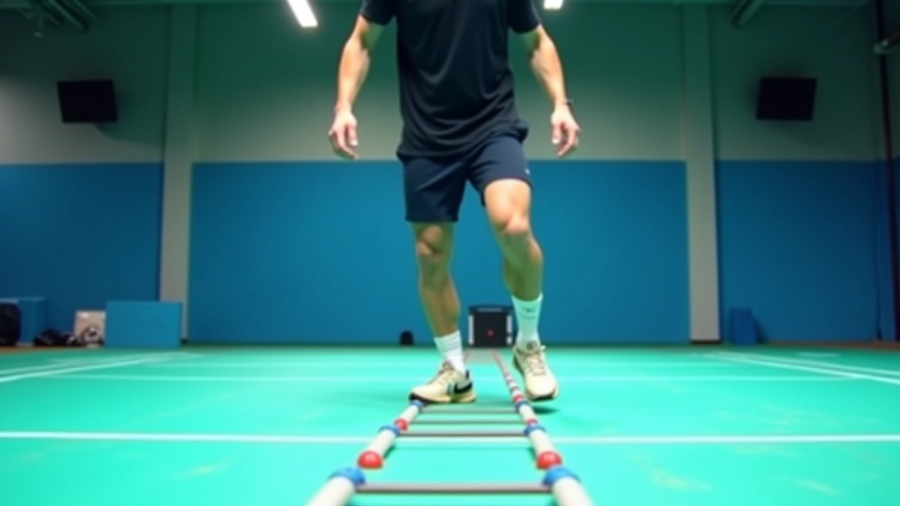
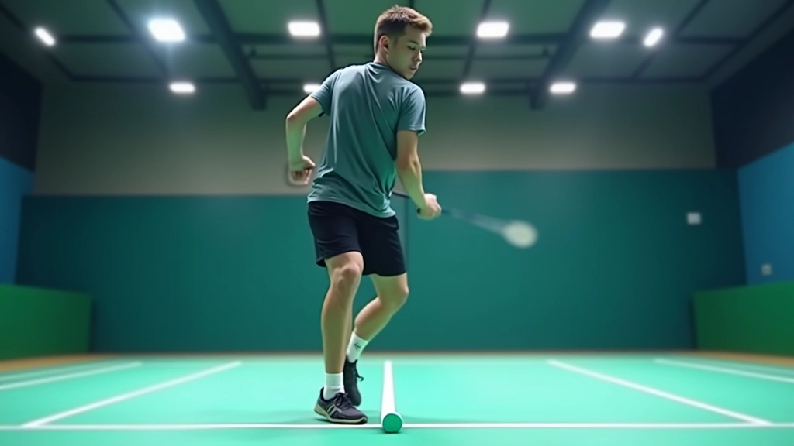
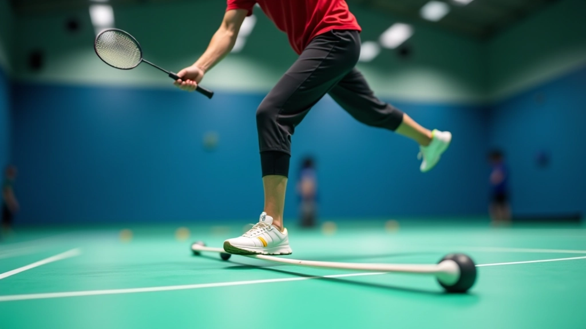
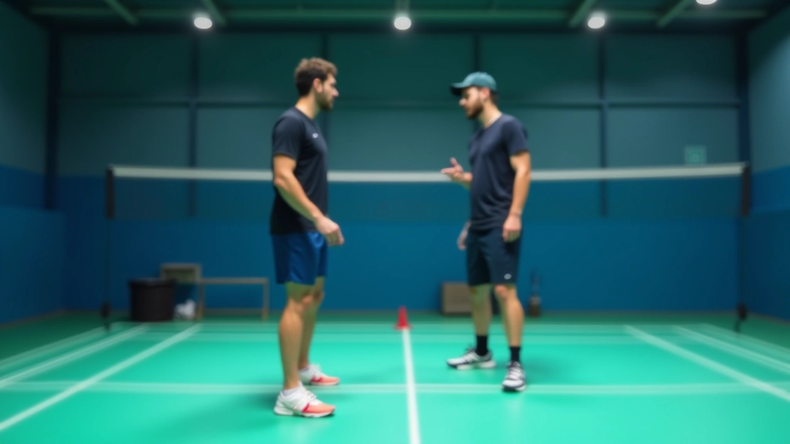

حركة القدمين المتقدمة والسرعة
تطوير سرعة الاستجابة والحركة الجانبية. تركز هذه المقالة على التقنيات المتقدمة ال...
اقرأ المزيد
تعرف على الخطوات الأولى الصحيحة لتمارين سلم السرعة. تشرح هذه المقالة أنماط الحركة الثلاثة الأساسية التي يجب إتقانها قبل التقدم.

فريق التحرير والمحتوى
كتبه فريق حركة الريشة التحريري، مختص بتقديم إرشادات عملية وسهلة التطبيق في مجال تدريب الريشة الطائرة.
سرعة القدمين هي أساس اللعبة الجيدة. ما يميز اللاعب المحترف عن المبتدئ ليس فقط قوة الضربة، بل سرعة الاستجابة والحركة في الملعب. تمارين السلم توفر لك تدريباً منظماً يطور هذه المهارة بشكل تدريجي.
ستلاحظ في الأسابيع الأولى أن حركتك تصبح أسرع وأكثر دقة. الفكرة بسيطة: نركز على الحركة الصحيحة من البداية، لا نسرع الخطى قبل إتقان الأساسيات.
أنماط حركة أساسية ستتعلمها
أسابيع حتى ترى النتائج الواضحة
دقيقة لكل جلسة تدريب مثالية
هذا هو أبسط الأنماط وأكثرها أساسية. تتقدم للأمام بخطوة واحدة في كل مربع من مربعات السلم. القدم اليمنى تدخل المربع الأول، ثم اليسرى، وهكذا بالتسلسل.
المهم جداً هنا هو الحفاظ على توازن الجسم والبقاء على أصابع القدمين. لا تضع وزنك على الكعب. كل حركة تجب أن تكون خفيفة وسريعة. حاول أن تكمل مسافة السلم في حوالي 4-5 ثوان في البداية، ثم قلل الوقت مع الممارسة.


هذا النمط أكثر تحدياً لأنك تتحرك جانباً بدلاً من الأمام. تبدأ بقدم واحدة خارج السلم، ثم تخطو بالقدم الأخرى داخل أول مربع. ثم القدم الأولى تدخل المربع بجانبها. الحركة تستمر بنفس النمط.
الحركة الجانبية مهمة جداً في الريشة الطائرة لأن اللعبة تتطلب حركة سريعة يميناً ويساراً. لا تنسَ أن تمارس النمط من الاتجاهين — من اليمين إلى اليسار، ومن اليسار إلى اليمين. هذا يضمن تطوراً متوازناً لقدميك.
نصيحة مهمة: لا تسرع كثيراً في البداية. الهدف الأول هو إتقان الحركة الصحيحة، ثم زيادة السرعة تدريجياً.
استمر في تطوير مهاراتك مع هذه المقالات
تطوير سرعة الاستجابة والحركة الجانبية. تركز هذه المقالة على التقنيات المتقدمة ال...
اقرأ المزيد
خطة عملية لتطبيق تمارين السلم بشكل منتظم. يتضمن جدول زمني واضح مع نصائح لتجنب ال...
اقرأ المزيد
تعلم من أخطاء شائعة يرتكبها اللاعبون. هذه المقالة تشرح ما يجب تجنبه وكيفية تصحيح...
اقرأ المزيدهذا النمط يتطلب تركيزاً أكثر من السابقين. تتحرك للأمام لكن قدمك اليسرى تعبر أمام قدمك اليمنى وتدخل المربع، ثم اليمنى تتابع. الحركة تشبه الرقص أكثر من كونها مجرد جري.
الفائدة الكبيرة من هذا النمط هي تطوير التنسيق بين القدمين والجسم. ستشعر أنه صعب في البداية، وهذا طبيعي تماماً. لا تستعجل. أكمل مع النمطين الأول والثاني لمدة أسبوعين قبل أن تركز على هذا النمط.

أحذية الريشة الطائرة مصممة خصيصاً لهذه الحركات. لا تستخدم أحذية الجري العادية أو أي أحذية رياضية أخرى.
بعد كل مسافة، خذ 30-45 ثانية راحة. هذا يسمح لقلبك بالتعافي ويحسن الأداء في الجولة التالية.
مشاهدة نفسك تتمرن تساعدك على اكتشاف الأخطاء التي لا تشعر بها. حاول مرة واحدة على الأقل كل أسبوع.
ثلاث جلسات في الأسبوع أفضل من جلسة واحدة طويلة. التمرين المنتظم ينتج أفضل النتائج.
في الأيام الثلاثة الأولى، ستشعر بإرهاق في قدميك وسيقانك. هذا طبيعي تماماً. عضلاتك تعتاد على نوع جديد من الحركة. لا تقلق، هذا الشعور يختفي بعد أسبوع تقريباً.
بعد أسبوعين، ستلاحظ أن الحركات أصبحت أسهل وأخف. بعد شهر واحد، ستشعر بفرق حقيقي في سرعتك على الملعب. بعد ستة إلى ثمانية أسابيع، التحسن يصبح واضحاً للجميع — أنت ستتحرك بسرعة وثقة أكبر.

تمارين السلم ليست معقدة، لكنها تتطلب التزاماً والانتظام. ركز على الحركة الصحيحة أولاً، والسرعة ستأتي بنفسها مع الممارسة. الخطوة الأولى هي أن تحصل على سلم السرعة وتبدأ بالنمط الأول.
لا تقارن نفسك باللاعبين الآخرين. كل شخص له وقته الخاص للتطور. الأهم أن تبدأ الآن وتستمر بالممارسة. خلال بضعة أسابيع، ستشعر بالفرق وستتمنى أنك بدأت قبل ذلك.
استكشف المزيد من تمارين السلمهذه المقالة تقدم معلومات تعليمية حول تمارين السلم الأساسية. إذا كنت تعاني من أي إصابة أو مشكلة صحية، يفضل استشارة مدرب متخصص أو طبيب قبل البدء بأي برنامج تدريب جديد. كل شخص له احتياجات جسدية مختلفة، والتدريب يجب أن يكون مخصصاً حسب حالتك الصحية.